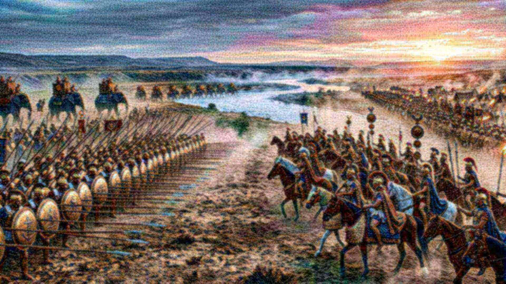

Salle 23 · Aile V — Les Prophéties
Daniel 11 : l’histoire écrite à l’avance
Verset par verset, deux mille ans d’histoire.
Ce qui est révélé est pour un temps encore fixé.Daniel 11:35
Le propos
Daniel 11 décrit une rivalité séculaire entre un roi du Nord et un roi du Sud. Le site déroule le chapitre en double colonne : le texte, puis les faits historiques que la lecture retenue y rattache, avec les dates et les sources. Les versets 40-45 restent dans l’avenir : aucune date n’est avancée.
En cours d’accomplissementLa prophétie
Daniel 11 : l’histoire écrite à l’avance
Daniel 11:2-45 ; 12:1
Ce qui est annoncé
- Quatre rois perses, dont un quatrième « plus riche que tous » qui soulèvera tout contre la Grèce.Daniel 11:2
- Un roi puissant dont l’empire sera partagé aux quatre vents.Daniel 11:3, 4
- Le roi du Sud et un de ses princes deviennent rivaux ; un mariage scellé puis brisé.Daniel 11:5, 6
- Une bataille décisive entre rois du Nord et du Sud, puis le tribut et le mariage imposé.Daniel 11:10-17
- Un roi méprisable prend le pouvoir par intrigue et profane le sanctuaire.Daniel 11:21-31
- Au temps de la fin, le roi du Sud pousse l’attaque ; le roi du Nord déferle ; il finit près de la mer et de la montagne sainte.Daniel 11:40-45 ; 12:1
Ce qui s’est passé
Lecture retenue : les rois du Nord et du Sud désignent d’abord les Séleucides et les Lagides (Antiochos III, Raphia en 217 av. n. è., Cléopâtre Ire donnée à Ptolémée V), puis le rôle glisse vers Rome, l’Allemagne, l’Union soviétique et aujourd’hui la Russie et ses alliés au nord, la puissance anglo-américaine au sud. Les versets 40-45 et 12:1 concernent l’avenir.
Nuance honnête : L’identification actuelle du roi du Nord et du roi du Sud est une lecture confessante, reformulée ici sans polémique et sans hostilité politique. Le site n’avance aucune date pour les événements à venir.
Pièces à conviction
Fragments de Daniel de Qumrân
Fragments manuscrits du livre de Daniel (dont 4QDanᶜ) copiés avant la fin du IIᵉ siècle av. n. è. : ils attestent l’ancienneté du texte, non sa date de composition, qui reste discutée.
- Conservation
- Israel Museum / collection Rockefeller
- Inventaire
- 4QDanᶜ
- Datation
- ≈ 150–100 av. n. è.
- Vérifier
- catalogue du musée
Pierre de Rosette
Décret de Ptolémée V gravé en 196 av. n. è. : témoin matériel de la période des rois du Nord et du Sud décrite en Daniel 11.
- Conservation
- British Museum
- Inventaire
- EA 24
- Datation
- 196 av. n. è.
- Vérifier
- catalogue du musée
Objections honnêtes
Mais certains disent…
La science n’a-t-elle pas rendu Dieu inutile ?
La science décrit comment les choses fonctionnent ; elle ne dit pas pourquoi il y a quelque chose plutôt que rien. Un astronome qui mesure la composition d’une étoile ne prétend pas expliquer pourquoi les lois de la physique existent. Les deux questions sont différentes, et la seconde reste ouverte.
Le « réglage fin » n’est-il pas un argument trompeur ?
L’argument a des limites, et le site les expose : certaines marges sont plus larges qu’on ne le dit souvent, des prépublications récentes contestent des estimations classiques, et le multivers est une réponse possible — non observable, et qui doit elle-même être réglée. Ce qui reste solide, c’est le fait mesuré : les valeurs sont ce qu’elles sont, et une vie exigeante en dépend.
Pourquoi tant de souffrance si un Créateur bienveillant existe ?
C’est l’objection la plus sérieuse, et le site ne la minimise pas. La Bible ne présente pas la souffrance comme voulue par Dieu : elle l’attribue à la rébellion, au mauvais usage de la liberté et à un adversaire. Elle annonce aussi sa fin (Révélation 21:4 ; Isaïe 33:24). Une réponse de ce type demande une confiance ; elle ne se décrète pas.
Les prophéties n’ont-elles pas été écrites après les événements ?
C’est une objection légitime, et le site y répond par les manuscrits : les rouleaux de Qumrân datent d’avant le Ier siècle pour Isaïe et d’avant la fin du IIᵉ siècle av. n. è. pour Daniel. Cela prouve l’ancienneté des copies, pas nécessairement la date de composition : la critique universitaire situe souvent Daniel au IIᵉ siècle. Le site affiche ce désaccord au lieu de l’éviter.